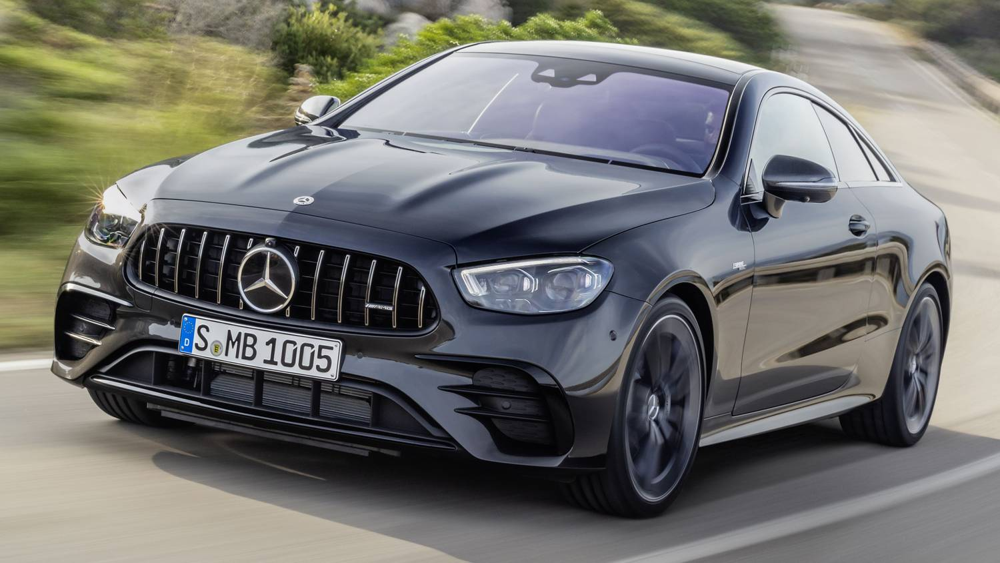

Mercedes
A Mercedes-Benz régóta foglalkozik az autósporttal, beleértve a Formula–1-et is. Az 1930-as években nagy sikert ért el az „Ezüst Nyilakkal” Alfred Neubauer vezetésével. A háború után Juan Manuel Fangio megnyerte a Formula–1-es világbajnokságot egy Mercedes-Benz W 196-tal, 1954-ben és 1955-ben. 1955-ben véget ért a Daimler-Benz elkötelezettsége a motorsportban, az első 24 órás verseny Le Mans utáni, súlyos baleset következtében (84 haláleset). Csak 1988-ban tért vissza a cég a versenyezéshez. A Formula–1-ben a Mercedes-Benz és a McLaren 1995-től megalakította a McLaren-Mercedes csapatát. A motorokat az Ilmor vagy a Mercedes leányvállalata, a Mercedes-Benz High Performance Engines gyártotta. 1998-ban és 1999-ben Mika Häkkinen és 2008-ban Lewis Hamilton a Formula–1 világbajnoka lett egy McLaren-Mercedesben. 2009. november 16-án a Daimler AG bejelentette, hogy átveszi a csapatrészvények 75,1%-át a Brawn GP-ben, amely ugyanabban az évben először versenyzett, és megnyerte a versenyzők és a kivitelezők világbajnokságát Mercedes motorokkal. Azóta a versenyző csapat Mercedes Grand Prix (2011-ig) vagy Mercedes AMG F1 Team (2012-es szezontól) néven versenyzett, mint Mercedes dolgozó csapat, német zászló alatt. A csapat hivatalos székhelye a Daimler stuttgarti központja. A csapat úgy működött, mint elődje, az angliai Brackley-ből származó Brawn GP. A Brawn GP megszerzése során a Mercedes-Benz befejezte kizárólagos partnerségét a brit McLaren Grouppal, és eladta 40 százalékos részesedését. 2014 és 2019 között a csapat egymás után hatszor nyert: mind a konstruktőri, mind a pilótabajnokság terén (Lewis Hamilton 2014-ben, 2015-ben és 2017-2019-ben, valamint Nico Rosberg 2016-ban). A 2018-as szezon végén a Mercedes csapata 18 év után elhagyta a DTM-et.